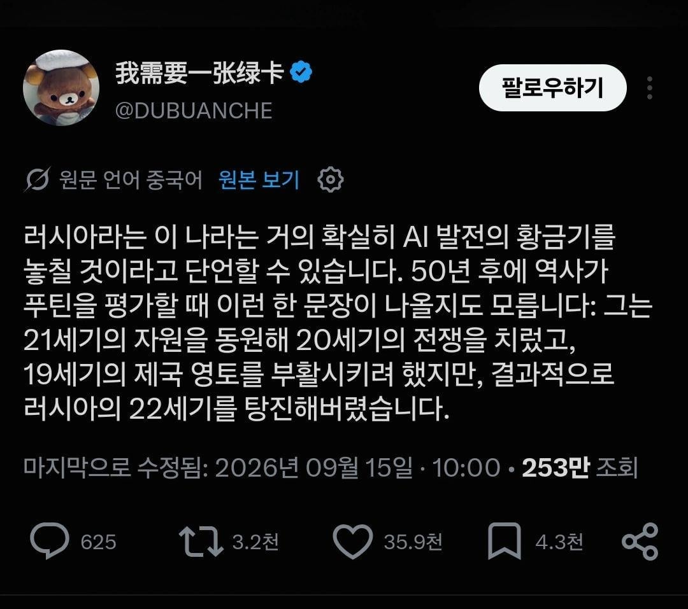

러시아는
1. 데이터 센터 냉각에 압도적으로 유리한 기후
2. 넘쳐나는 천연 자원 (전기)
3. 넓은 영토
4. 관련 인재들
등등을 가지고도 전쟁에 파묻혀서 AI황금기를 놓치고 있는중
/
참고로 러시아 지역 평균 기온은
1961~1990년 평균: 약 -6℃
1901~2024년 평균: -4.77℃
2024년 평균: -2.63℃
인데 1년 내내 춥다는 말은 아니고 평균내면 이렇다는 말

러시아는
1. 데이터 센터 냉각에 압도적으로 유리한 기후
2. 넘쳐나는 천연 자원 (전기)
3. 넓은 영토
4. 관련 인재들
등등을 가지고도 전쟁에 파묻혀서 AI황금기를 놓치고 있는중
/
참고로 러시아 지역 평균 기온은
1961~1990년 평균: 약 -6℃
1901~2024년 평균: -4.77℃
2024년 평균: -2.63℃
인데 1년 내내 춥다는 말은 아니고 평균내면 이렇다는 말
배터리가 아니라 송전은 별 상관 없을껄...
온도가 내려갈수록 저항이 줄어드는거 아니었어? ㅋㅋㅋ
존나 추우면 전기도 송전중에 손실이 적어? ㅋㅋㅋ 궁금해